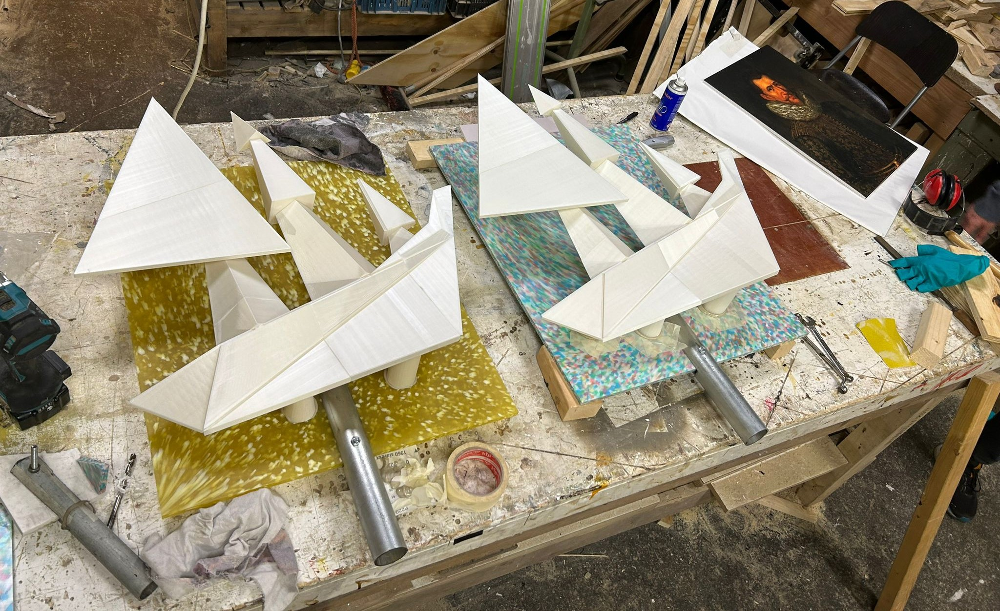
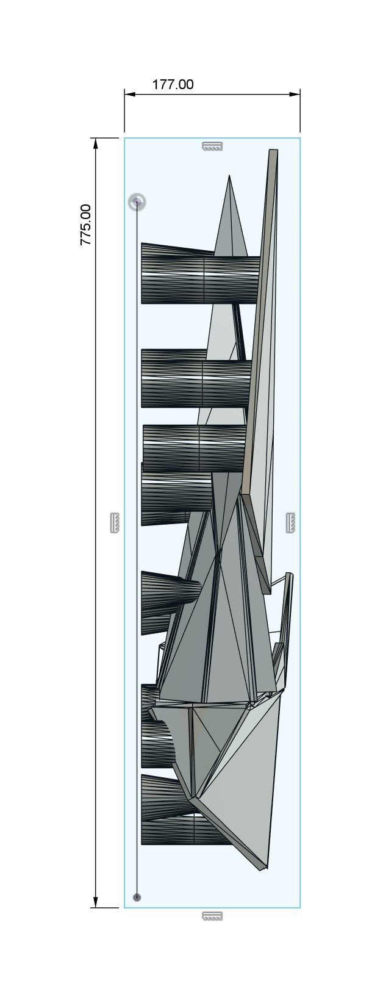

Volg ons op:

Voor het project Gesprek Slavernijverleden werkte ik mee aan 3D‑visualisaties en technische montageconstructies die onderdeel werden van de interactieve installatie.
Website van het project: gesprekslavernijverleden.nl

